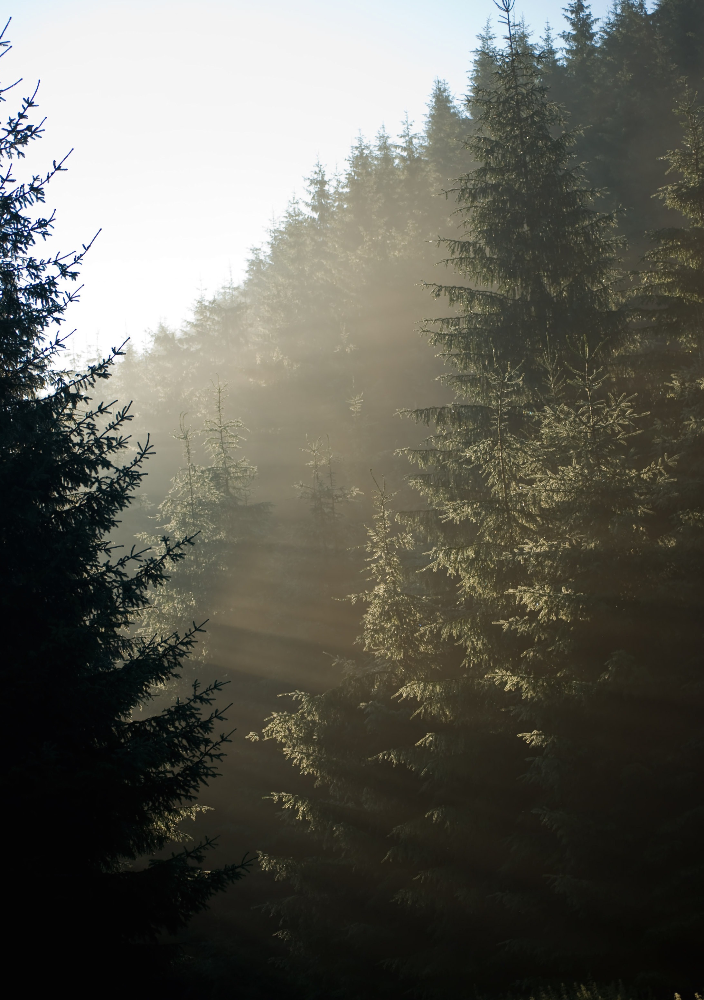

The University of Virginia's Cavalier Outdoor Adventure Retreat (COAR) is a unique three-day orientation that brings incoming first years on a camping trip to Shenandoah National Park. COAR attendees will get the chance to hike to waterfalls, enjoy scenic mountain views, and stay in a primitive PATC cabin in a secluded backcountry setting. A fun, safe, and memorable trip, COAR seeks facilitiate life-long friendships between first year students and allow them to develop a close "family" before matriculating to college.
Each trip pairs 10 incoming students with 2 current UVA students who act as the trip's leaders. Some trips also include professors who volunteer to join the group on one of our 2 main hikes. Not an experienced outdoor person? That's okay! We provide all necessary camping/backpacking equipment.
The COAR Program is organized by UVA Outdoor Recreation. Come stop by to check out our rock-climbing wall, kayaking trips, and hiking adventures.
Trip Cost: $165 (Food, Equipment, and Transportation are all included)
Explore the Route
Day 1: COAR will begin at 5 PM. You'll meet your instructors at the Outdoor Recreation Center located at 119 Emmet St. N, next to the Cavalier Inn. Staff will check over equipment, check out any supplemental gear you need (per packing list), and help start the process of getting to know the others in your group. Dinner is provided and you'll spend this first evening at Slaughter Recreation Center. Available activities include ping-pong, raquet-ball, volleyball, cards, etc.
Day 2: After breakfast, the group will depart for Shenandoah National Park where you'll do a short scenic hike before lunch. In the afternoon, you'll hike to the PATC cabin where you’ll be spending the next two nights. The group will set-up camp, cook dinner, and explore the area.
Day 3: You'll enjoy a longer hike with scenic views, creeks, and waterfalls. This hike will be approximately 8 miles long and will vary depending on which PATC cabin your group is staying in (Corbin or Doyles). You'll hike at an enjoyable pace to make this the main event of the day, spend time at waterfalls, etc. The hike will be followed by a big dinner back at camp, as well as stargazing and a campfire (if weather permits).
Day 4: You can sleep in a bit longer and pack up camp after breakfast. You'll arrive back in Charlottesville by late morning, clean-up, return gear, take showers (at Slaughter Recreation Center), and enjoy going out to lunch together on the Corner. You'll arrive back at the Outdoor Recreation Center by 1:30 PM.